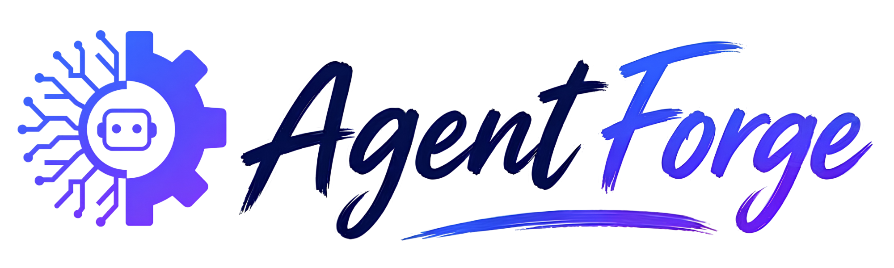

Nanyang Technological University, Singapore
November 15 – 19, 2026
What is an AI Agent? An AI agent goes beyond a standard chatbot. It is a software system that can use an AI model to pursue a goal, make decisions, plan steps, and interact with external tools or data sources. Unlike a standard chatbot, which primarily responds to user prompts, an AI agent can carry out multi-step tasks by selecting and using tools such as literature search engines, databases, code interpreters, or analysis scripts. Depending on its design, it may operate with varying levels of human oversight.
Why AI Agents as Scientific Research Assistants? Modern research generates overwhelming volumes of data and literature that no individual can fully keep up with. AI agents can help by automating repetitive tasks, analyzing large datasets, searching and synthesizing literature, generating hypotheses, running simulations, and connecting knowledge across disciplines — enabling researchers to work faster and more accurately. They also improve reproducibility by systematically tracking methods, parameters, and results. At the same time, human scientists remain essential: they provide critical judgment, verify accuracy, interpret findings in context, and ensure that research is conducted ethically and meaningfully. AI agents are most powerful not as replacements, but as collaborative partners that amplify what researchers can achieve.
What You Will Learn and Do
To be announced. Stay tuned!
November 15 – 19, 2026
Day 0 (Sunday): Arrival, reception dinner
Day 1 (Monday): Keynote 1, Tutorial 1-2, Hackathon team forming
Day 2 (Tuesday): Keynote 2-3, Tutorial 3-4, Hackathon ideation
Day 3 (Wednesday): Tutorial 5, Hackathon
Day 4 (Thursday): Hackthon, Final presentation, reception dinner, departure
(Day 5 (Friday): Departure)
Schmidt AI in Science Postdoctoral Fellow, Nanyang Technological University (NTU)
Schmidt AI in Science Postdoctoral Fellow, Nanyang Technological University (NTU)
Schmidt AI in Science Postdoctoral Fellow (Alumni), University of Michigan (UM)
Schmidt AI in Science Postdoctoral Fellow, Nanyang Technological University (NTU)
Schmidt AI in Science Postdoctoral Fellow, National University of Singapore (NUS)
Ph.D. candidate, National University of Singapore (NUS)
Master's Candidate, Xidian University